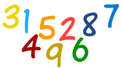

First Digits Rule!
(Benford's Law)
Don't cheat with numbers,
they can give you away.
So says Benford's Law.

First Digits
How often would you expect a "1" to be the first digit in a set of numbers?
Example: you are looking at a list of expenses, with numbers like:
- $65.20 (first digit is 6)
- $35.00 (first digit is 3)
- $7.50 (first digit is 7)
- $12.50 (first digit is 1)
Would there be as many 1's as 2's for the first digit?
Well 1 is just a number like 2 to 9, right?
So it seems like it should be the first digit 1 out of 9 times (about 11%):
| 1 | 2 | 3 | 4 | 5 | 6 | 7 | 8 | 9 |
| 11% | 11% | 11% | 11% | 11% | 11% | 11% | 11% | 11% |
But no!
A man called Dr. Frank Benford discovered that in many cases, the number 1 is the first digit about 30% of the time.
And the poor old number 9 is the first digit only 5% of the time.

The story is that a man called Simon Newcomb noticed a book of logarithms was very worn at the start but not at the end.
"Why are people more interested in 1's and 2's than 8's and 9's?"
He decided to investigate! (Would you investigate something odd?)
Dr. Benford found this amazing thing also happened with baseball statistics, areas of rivers, population sizes, street addresses and many more cases.
Why is this?
Well, let's think about street addresses:
What are the first digits of house numbers?
- some streets are short: 1,2,3,4,5,6
- some streets are longer: 1,2,3,4,5,6,7,8,9,10,11,12,13,14,15,16 (notice how many, have 1 as the first digit?).
- other streets are a bit longer, with numbers from 1 to 30 (many "1"s and "2"s)
- And when the streets are very long we have lots of them starting at 100.
The result is that numbers starting with 1 are more common, 2 is also fairly common and 9 least of all.
Example: Stock Prices
Let us say a price starts at 1.00, and goes up 10% each time:
| Price | First Digit |
|---|---|
| 1.00 | 1 |
| 1.10 | 1 |
| 1.21 | 1 |
| 1.33 | 1 |
| 1.46 | 1 |
| 1.61 | 1 |
| 1.77 | 1 |
| 1.95 | 1 |
| 2.14 | 2 |
| 2.36 | 2 |
| 2.59 | 2 |
| 2.85 | 2 |
| 3.14 | 3 |
| 3.45 | 3 |
| 3.80 | 3 |
| 4.18 | 4 |
| 4.59 | 4 |
| 5.05 | 5 |
| 5.56 | 5 |
| 6.12 | 6 |
| 6.73 | 6 |
| 7.40 | 7 |
| 8.14 | 8 |
| 8.95 | 8 |
| 9.85 | 9 |
Lots of 1's, quite a few 2's, less 3's, etc
The Result
In fact Benford figured that the probability of a first digit being d is:
P(d) = log10(1 + 1/d)
Example: the probability of a first digit of 2:
And these are the probabilities:
| 1 | 2 | 3 | 4 | 5 | 6 | 7 | 8 | 9 |
| 30.1% | 17.6% | 12.5% | 9.7% | 7.9% | 6.7% | 5.8% | 5.1% | 4.6% |
Example: Sam went through a list of 100 work expenses for the year.
There was $1.95 for a pen, $4.95 for a marker, etc. Here are the counts of the first digits:
| First Digit: | 1 | 2 | 3 | 4 | 5 | 6 | 7 | 8 | 9 |
| Count: | 26 | 19 | 10 | 11 | 9 | 15 | 2 | 5 | 4 |
It follows Benford's Law pretty well.
Except there are a lot of "6"s, because printer paper costs $6 and they buy a lot of it.
Lotteries

Lottery numbers don't follow this rule, because they aren't the size or amount of anything, they are really just symbols (and a lottery would work as well using letters or pictures).
Finding Cheaters
When people try to fake numbers they often choose the first digit randomly and end up with as many "9"s as "1"s.
But a computer program can go through all the numbers and count first digits to see how often a "1" appears compared to a "5" or "9". If it looks suspicious ... watch out!
This can help uncover tax cheats, election rigging and more.
Your Turn
Gather a list of 100 numbers from a category of your choosing. Make sure the numbers count or measure something (and aren't just symbols).
Here are some suggestions:
- House Numbers
- City populations
- Supermarket prices
- Used car prices
Find their first digits and complete this table:
| First Digit: | 1 | 2 | 3 | 4 | 5 | 6 | 7 | 8 | 9 |
| Count: |
What did you find?
Bonus Activity
Get some friends to make up pretend shopping lists with how much each item costs. Find the first digits and put them in a table:
| First Digit: | 1 | 2 | 3 | 4 | 5 | 6 | 7 | 8 | 9 |
| Count: |
What did you find?